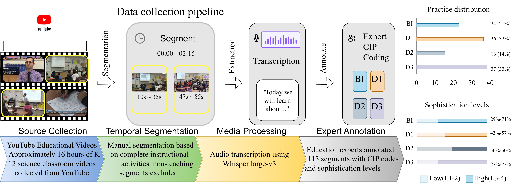
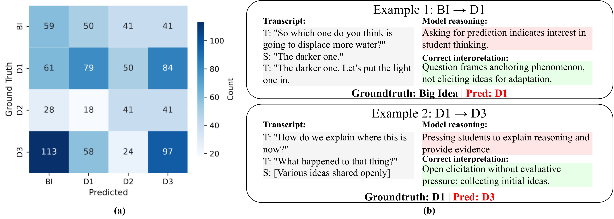

K–12 science classrooms are rich sites of inquiry where students coordinate phenomena, evidence, and explanatory models through discourse; yet, the multimodal complexity of these interactions has made automated analysis elusive. Existing benchmarks for classroom discourse focus primarily on mathematics and rely solely on transcripts, overlooking the visual artifacts and model-based reasoning emphasized by the Next Generation Science Standards (NGSS). We address this gap with SciIBI (Science Inquiry-Based Instruction), the first video benchmark for analyzing science classroom discourse, featuring 113 NGSS-aligned clips annotated with Core Instructional Practices (CIP) and sophistication levels. By evaluating eight state-of-the-art LLMs and Multimodal LLMs, we reveal fundamental limitations: current models struggle to distinguish pedagogically similar practices, suggesting that CIP coding requires instructional reasoning beyond surface pattern matching. Furthermore, adding video input yields inconsistent gains across architectures. Crucially, our evidence-based evaluation reveals that models often succeed through surface shortcuts rather than genuine pedagogical understanding. These findings establish science classroom discourse as a challenging frontier for multimodal AI and point toward human-AI collaboration, where models retrieve evidence to accelerate expert review rather than replace it.
SciIBI operationalizes science classroom discourse analysis using the Core Instructional Practices framework from Windschitl et al. (2012). The framework specifies four practices that support inquiry-based instruction, each with a performance progression from basic to ambitious enactments. Given a classroom clip (with transcript and optional multimodal inputs), a model predicts the dominant practice:
Sophistication increases from Level 1 (surface-level) to Level 4 (model-based inquiry). The binary sophistication probe groups Levels 1–2 as Low and Levels 3–4 as High.
| Level 1 | Level 2 | Level 3 | Level 4 | |
|---|---|---|---|---|
| BI | Topics, vocabulary, "things." Students name, label, identify using correct vocabulary. | Observable process. Focus on "what is changing" or how conditions affect an event. | Explanatory model focus. Focus on unobservable processes/entities and relationships among concepts. Link to observable phenomena to develop explanatory models. | |
| D1 | Monitor and reteach. Check for "correct" conceptions; one-on-one tutoring or IRE pattern. | Elicit initial understandings. Draw out students' hypotheses and questions about scientific ideas. | Adapt to student ideas. Pose open-ended tasks or puzzling events. Use students' language to shape conversations. | |
| D2 | Focus on procedure. Describe procedures and experimental setups; downplay concepts. | Discover/confirm ideas. "Proof of concept" activities; acquire accepted facts and laws. | Link concepts across investigations. Seed new concepts; students derive explanatory language. | Model-based inquiry. Use evolving models as reference before, during, and after inquiry. |
| D3 | No press for explanation. No explanation required; "explain" means "justify." | "What happened." Describe variables, group differences, trends, or observations. | "How/partial why." Hypothesize and predict system behavior. | Causal explanation. Use unobservables to construct causal stories; discuss "what counts" as evidence. |
Table 1: CIP framework (Windschitl et al., 2012). Sophistication increases from Level 1 to Level 4.
The final benchmark comprises 113 clips (~3 hours of classroom video), segmented from 82 NGSS-aligned lessons (16.35 hours raw) sourced from 120 K–12 science YouTube channels. Clips range from 6 to 600 seconds (mean: 92s, median: 63s). All clips were consensus-coded by two researchers (a doctoral student and a faculty member) trained in the CIP framework. Label distribution reflects naturalistic variation: BI (n=24, 21%), D1 (n=36, 32%), D2 (n=16, 14%), D3 (n=37, 33%). Transcripts were generated with Whisper large-v3 and lightly corrected; timestamps were preserved to support evidence localization.

Figure 2: SciIBI benchmark construction. NGSS-aligned videos are temporally segmented and annotated by consensus. The 113 clips span four CIP categories and binary sophistication levels.
We compare two input configurations to isolate the contribution of visual information:
All strategies share identical CIP definitions and require a structured JSON response with
category, sophistication, and evidence fields. Outputs
failing schema validation receive one retry; unparseable responses are excluded from accuracy
computation.
We evaluate eight models spanning scales and modalities. Open-source: Mistral-7B, Llama-3.3-70B, GPT-OSS-20B, and InternVL3-78B (the only open-source MLLM in our set). Proprietary (API): GPT-4o, Claude Sonnet 4.5, Gemini-2.5-Pro, and Qwen3-VL-235B. Open-source models are deployed locally with 4-bit quantization (BitsAndBytes) for models exceeding 40B parameters, on NVIDIA L40S GPUs. All models use deterministic decoding (temperature=0.0) with max_new_tokens=1024.
Zero-shot accuracies range from 39.1% to 53.6%, substantially below the ~79% F1 reported for math discourse coding, confirming that CIP coding requires instructional-function judgments beyond surface lexical cues. CoT benefits larger models (GPT-4o: +5.5pp; Llama-70B: +3.6pp) but degrades smaller ones (Mistral-7B: −5.4pp). Few-shot yields modest, inconsistent gains (+1–3pp).
| Model | Size | Mod | Zero-shot | Few-shot | CoT | |||
|---|---|---|---|---|---|---|---|---|
| Acc | F1 | Acc | F1 | Acc | F1 | |||
| Proprietary (API) | ||||||||
| GPT-4o | — | T | 45.4 | 43.6 | 45.5 | 42.9 | 50.9 | 48.4 |
| GPT-4o | — | TV | 49.1 | 46.1 | 47.7 | 46.2 | 51.9 | 48.5 |
| Claude Sonnet 4.5 | — | T | 43.8 | 41.2 | 45.5 | 43.8 | 46.4 | 44.4 |
| Gemini-2.5-Pro | — | T | 39.3 | 38.8 | 42.0 | 40.3 | 42.9 | 41.3 |
| Gemini-2.5-Pro | — | TV | 42.9 | 39.9 | 42.9 | 40.3 | 48.2 | 44.6 |
| Qwen3-VL-235B | 235B | T | 46.4 | 40.8 | 48.2 | 43.5 | 45.5 | 41.7 |
| Qwen3-VL-235B | 235B | TV | 45.5 | 42.3 | 47.3 | 43.2 | 49.1 | 43.3 |
| Open-source (Local) | ||||||||
| Mistral-7B | 7B | T | 40.2 | 33.2 | 36.6 | 31.3 | 34.8 | 30.3 |
| GPT-OSS-20B | 20B | T | 39.1 | 37.4 | 37.7 | 35.5 | 36.6 | 35.6 |
| Llama-3.3-70B | 70B | T | 44.6 | 42.5 | 47.3 | 44.8 | 48.2 | 45.4 |
| InternVL3-78B | 78B | T | 46.4 | 43.6 | 47.3 | 44.0 | 47.3 | 45.3 |
| InternVL3-78B | 78B | TV | 53.6 | 47.8 | 50.9 | 45.3 | 50.9 | 46.2 |
Table 2: Classification performance on SciIBI. Accuracy (Acc) and Macro-F1 (%) across eight models using Text-only (T) and Text+Vision (TV) inputs under Zero-shot, Few-shot, and CoT prompting. Bold indicates best within each column.
Comparing text-only versus vision+text inputs, the best accuracy is 53.6% (InternVL3-78B, TV, zero-shot), a +7.1pp gain over text-only. However, gains are architecture-dependent: InternVL3 +7.1pp, GPT-4o +3.7pp, Gemini +3.6pp, while Qwen3-VL decreases by −0.9pp. Isolating vision within CoT yields +5.3pp for Gemini and +1.0pp for GPT-4o.
| Model | Zero-shot | Few-shot | CoT | |||
|---|---|---|---|---|---|---|
| Acc | Δ | Acc | Δ | Acc | Δ | |
| InternVL3-78B | 53.6 | +7.1 | 50.9 | +4.5 | 50.9 | +4.5 |
| GPT-4o | 49.1 | +3.7 | 47.7 | +2.3 | 51.9 | +6.5 |
| Gemini-2.5-Pro | 42.9 | +3.6 | 42.9 | +3.6 | 48.2 | +8.9 |
| Qwen3-VL-235B | 45.5 | −0.9 | 47.3 | +0.9 | 49.1 | +2.7 |
Table 3: Impact of visual modality. Δ is the change from each model's text-only zero-shot baseline.
InternVL3-78B (Text+Vision) achieves 39.1% overall (weighted) on the fine-grained 4-level sophistication task and 69.1% on the binary Low/High probe, with predictions skewing toward higher sophistication levels.
| Condition | Metric | BI | D1 | D2 | D3 |
|---|---|---|---|---|---|
| Ignore L1 | 4-Level | 50.0 | 28.6 | 50.0 | 37.8 |
| Binary | 66.7 | 54.3 | 85.7 | 78.4 | |
| Require L1 | 4-Level | 45.5 | 34.8 | 50.0 | 33.3 |
| Binary | 45.5 | 52.2 | 75.0 | 85.7 | |
| N | Ignore L1 | 24 | 35 | 14 | 37 |
| Require L1 | 11 | 23 | 4 | 21 |
Table 4: Sophistication level prediction (InternVL3-78B, Text+Vision). Accuracy (%) for fine-grained (4-Level) and binary (Low/High) tasks.
We designed an Evidence Quality Score (EQS) with three dimensions (1–3 scale): Alignment, Sufficiency, and Specificity. Two raters independently scored 60 model outputs (inter-rater κ: 0.73–0.92); disagreements were resolved by discussion. GPT-4o achieves higher EQS (2.67) than InternVL3 (2.40) despite lower accuracy, revealing that accuracy and evidence quality can diverge — correct predictions may cite superficial evidence (lexical shortcuts), while incorrect predictions sometimes provide well-grounded reasoning for genuinely ambiguous cases.
| Model | Alignment | Sufficiency | Specificity | Mean EQS |
|---|---|---|---|---|
| InternVL3-78B | 2.53 | 2.02 | 2.65 | 2.40 |
| GPT-4o | 2.67 | 2.69 | 2.64 | 2.67 |
Table 5: Evidence Quality Scores (EQS, 1–3 scale). Higher accuracy does not always correlate with higher-quality reasoning.
The aggregated confusion matrix (zero-shot, text-only) reveals two dominant patterns: D3→BI (113 cases) and D1→D3 (84 cases). Both are caused by models matching surface linguistic features without distinguishing the underlying pedagogical function, suggesting that current LLMs cannot reliably separate what is said from why it is said.

Figure 3: Failure analysis of text-only models. (a) Aggregated confusion matrix reveals systematic D3→BI and D1→D3 confusions. (b) Representative errors show models rely on surface keywords rather than pedagogical function.
Takeaways: (1) Visual input yields modest, architecture-dependent gains; not all MLLMs effectively integrate visual information for pedagogical reasoning. (2) Chain-of-thought helps large models but degrades smaller ones, suggesting step-by-step reasoning requires sufficient model capacity. (3) Evidence-based evaluation reveals cases where models succeed through lexical shortcuts rather than genuine understanding. We envision human-AI collaboration through evidence-first interfaces where model outputs serve as searchable annotations that augment expert judgment rather than replacing it.
@inproceedings{shen2026sciibi,
title={Can Multimodal LLMs "See" Science Instruction? Benchmarking Pedagogical Reasoning in K-12 Classroom Videos},
author={Shen, Yixuan and He, Peng and Liu, Honglu and Fan, Jinxuan and Ji, Yuyang and Li, Tingting and Chen, Tianlong and Xu, Kaidi and Liu, Feng},
booktitle={International Conference on Artificial Intelligence in Education (AIED)},
year={2026}
}